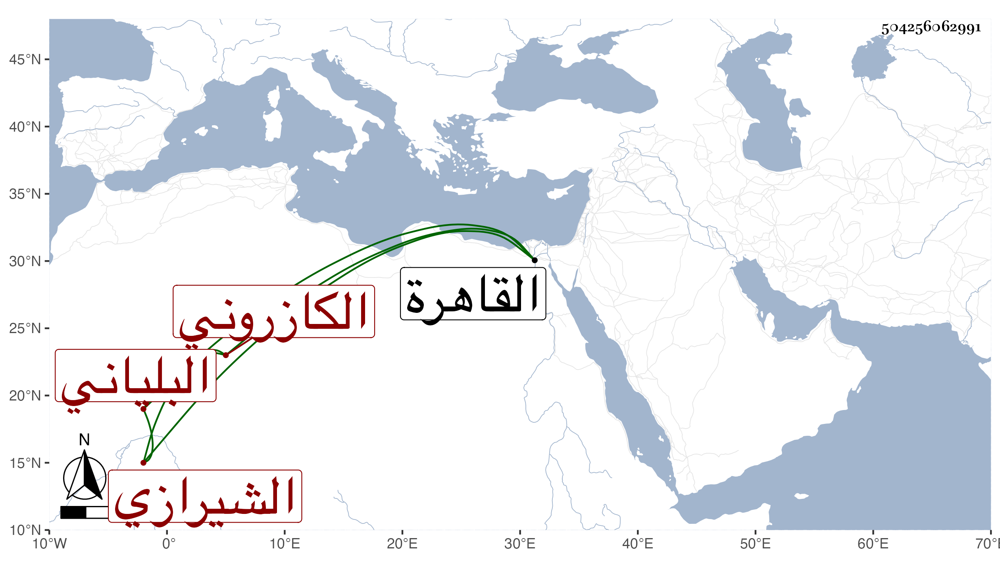

0902Sakhawi.DawLamic.ITO20230111-ara1.EIS1600.504256062991
Biography ID: 504256062991
528
محمد بن الجنيد بن أحمد بن محمد بن عمر بن محمد بن عمر النور بن أبي القسم الكازروني البلياني الأصل الشيرازي الماضي أبوه والمذكور جده في الثامنة . قدم القاهرة في سنة ثمان وأربعين رسولا عن ملك الشرق بكسوة الكعبة واجتمع بشيخنا صحبة حسين الفتحي وصنف لأجله جزءا في الأذكار وآخر في إصلاح مشيخة أبيه لابن الجزري وأذن له في الرواية عنه ووصف بالعلامة .
